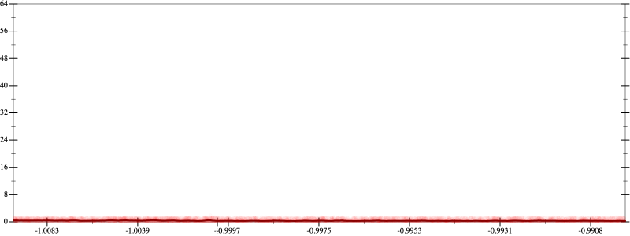
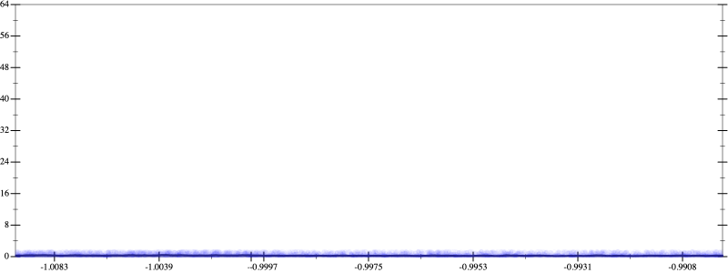
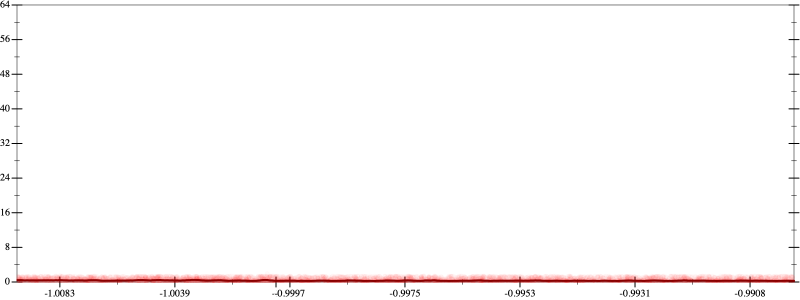
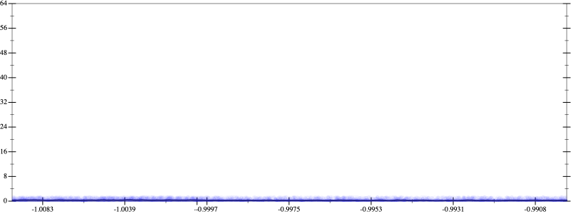
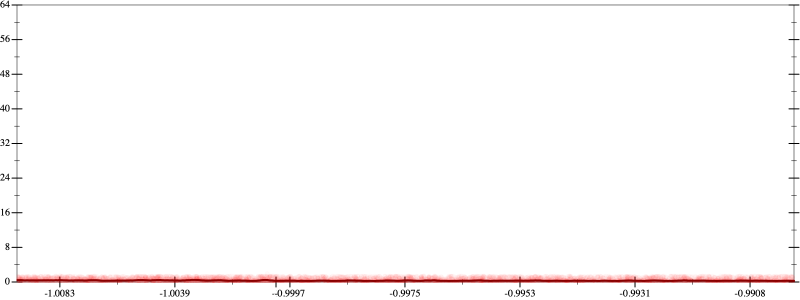
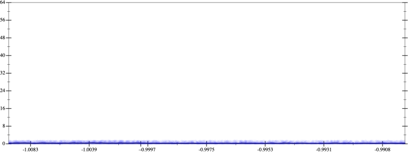

Error
 
Bits error versus x
Bits error versus x
Results
Initial program 0.3
Applied simplify0.2
rmApplied add-sqr-sqrt0.3
Time bar (total: 1.1m)Debug log
herbie shell --seed 1489255776
(FPCore (x)
:name "3"
:pre (and (>= x -1.01) (<= x -0.99))
(+ (+ (+ 1.0 (* -3.0 x)) (* 1.5 (* x x))) (* -0.166667 (* (* x x) x))))